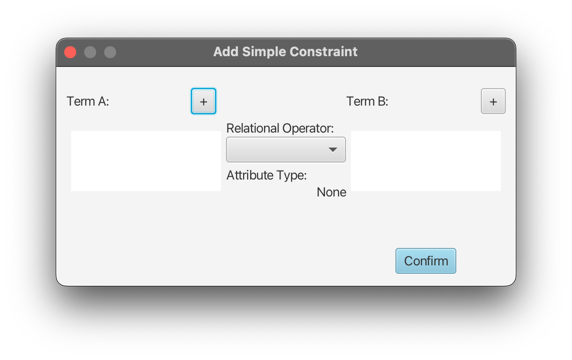
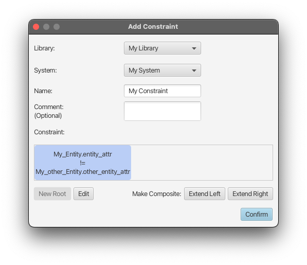
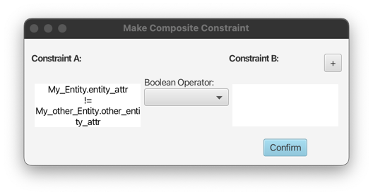
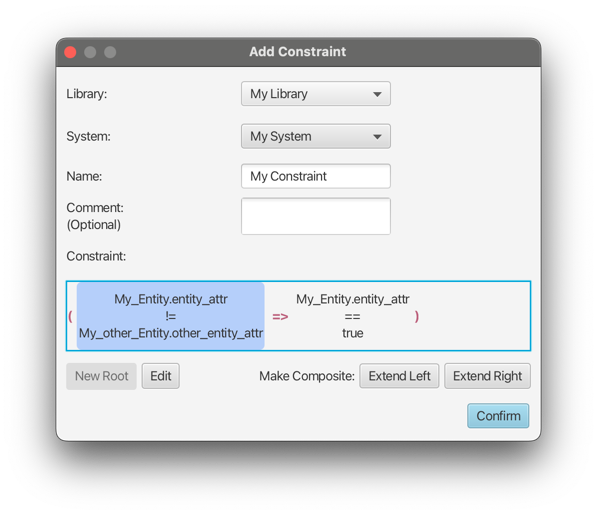
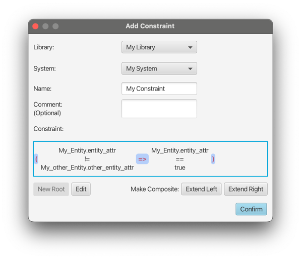
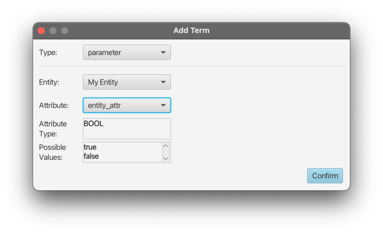
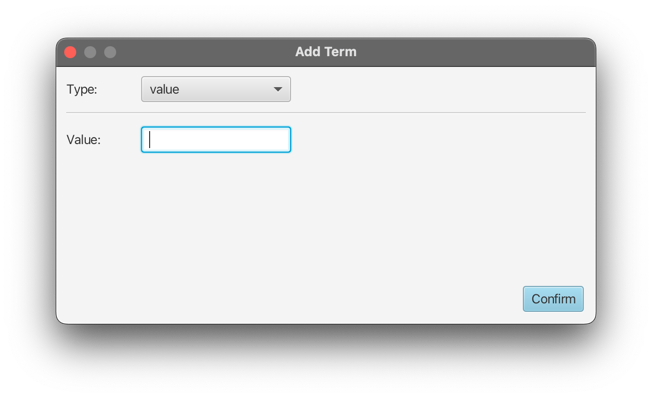
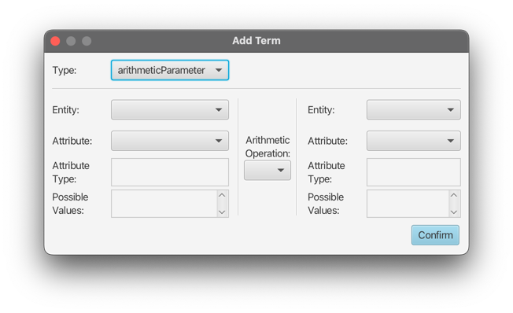
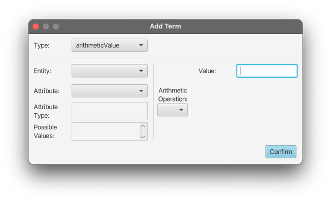

Creating a Constraint
Custom constraints can be added to restrict values of Attributes of Entities of a System. Currently, constraints can be started from a single simple constraint, and expanded in a binary-tree structure.
When creating a new constraint, the main window looks like the following:

Here, a new constraint can be started by using the New Root button bottom left.
Note
Already created constraints can also be edited afterwards using the Edit button.
For more information, see Editing Constraints
Simple Constraint Creation
This will open the Add simple Constraint popup:

A simple constraint consists of two terms and a relational operator. Attributes used in both terms need to be of the
same attribute type (boolean, enumeration, integer), and the available relational operators depend on the used type.
Attributes can be added using the two + buttons, and the operator can be selected using the choice box.
For more information on terms see Term Types below.
Expanding Simple Constraints
After the root has been created, it will be visible in the constraint area of the root window:

From this point on, the constraint can be arbitrarily expanded (made composite) by selecting it (by highlighting it via mouseclick),
and using the Expand Left and Expand Right buttons. This buttons will open up the Make Composite constraint popup,
with the existing constraint being on the left or right side, depending on the used button. The following screenshot
shows the example after using Expand Right:

Here, a boolean operator (&&, ||, or =>) can be selected to combine the existing constraint with a second new one.
The new constraint can be created using the +, button, which will open up the Add simple Constraint popup.
After the constraint has been expanded, it can be seen in the root Add Constraint window. Here, the composite constraint
is wrapped in parentheses. For easier overview on complex constraints, the parentheses and operator of a single
composite constraint are colored the same, and every additional composite constraint will use a different,
randomly selected color.
Additionally, composite constraints can be selected and expanded the same way as simple constraints, by selecting the parentheses or operator. Already expanded single constraints can also be further expanded, allowing creation of arbitrarily complex constraints.


Term Types
There are four different types of terms:
Parameter
A parameter term is a single attribute of any entity in the system. The system is predefined by the selection in the
initial Add Constraint popup.
Note
If the term in creation is the second term of the simple constraint, the available attributes might be limited. This is because attributes of both terms must have the same type, and the available attributes will be filtered by the type of the already existing term.

Value
The value term is the simplest type, as it only consists of a custom value that can be entered to the text field.
Warning
The text field allows unrestricted use of characters and numerals. This type should only be used in accordance with the other term used in the same constraint, to avoid yielding undesired and unexpected results.

Arithmetic Parameter
This type is a combination of two attributes, that are connected by an arithmetic operation.
Note
As this type uses arithmetic parameters, it can only be used for attributes of type integer (number range).

Arithmetic Value
The arithmetic value type combines an attribute and a custom value, using an arithmetic operation.
Note
As this type uses arithmetic parameters, it can only be used for attributes of type integer (number range).
Similarly, the custom value text field should only be used with numerical values.
